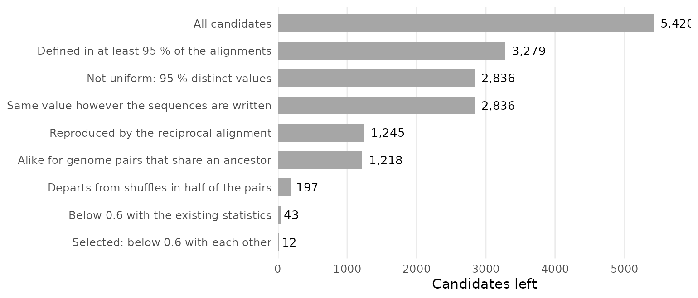
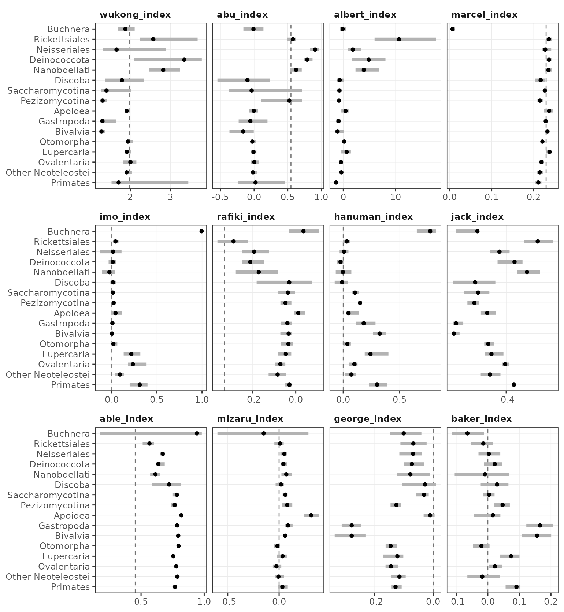
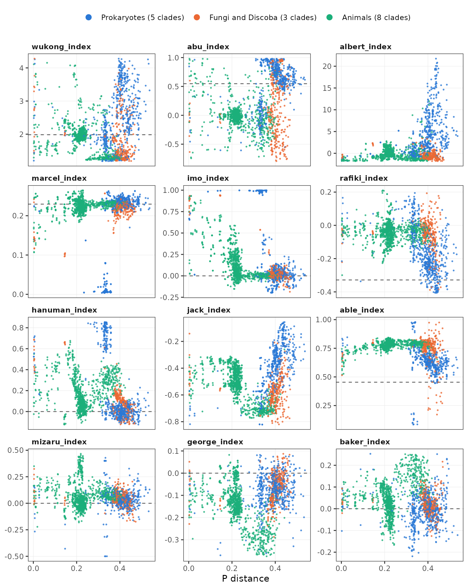

Monkey indices
Claude (Anthropic), from a screen requested by Charles Plessy
13 November, 2026
Source:vignettes/MonkeyIndices.Rmd
MonkeyIndices.RmdIntroduction
The other summary statistics of GenomicBreaks were each written to measure something that has a biological meaning, such as synteny or strand randomisation. The twelve monkey indices were not. They were retained from a screen of 5,420 candidate functions assembled mechanically (“monkey typing”) from the columns of an alignment table and from generic descriptive statistics. A candidate was retained when its value was:
- reproducible between the alignment of A to B and the alignment of B to A;
- more alike between genome pairs that share an ancestor than between other pairs;
- different from the value obtained after shuffling the order and the strand of the alignments;
- not strongly correlated with the statistics that already existed, nor with the other candidates retained (absolute rank correlation below 0.6).
What the indices mean biologically, if anything, is to be found. Each one is named after a famous monkey.
This vignette shows how to compute the indices, defines them, and reports how they were selected and how they behave on the 1,910 alignments of the screen. The screen was run on 2026-11-11 by Claude, an AI model made by Anthropic; the R functions, their tests and this vignette were written in the same session. The numbers reported here describe the alignments of the screen, and will differ on other data.
Computing the indices
Each function takes a GBreaks object that was not
coalesced, and returns one number. No function has a parameter. We use
the alignment of two yeast genomes that is distributed with the
package.
gb <- load_genomic_breaks(
system.file("extdata/SacCer3__SacPar.gff3.gz", package = "GenomicBreaks"))
gb## GBreaks object with 505 ranges and 2 metadata columns:
## seqnames ranges strand | score query
## <Rle> <IRanges> <Rle> | <numeric> <GRanges>
## [1] chrM 191-813 + | 984 NC_018044.1:61854-62304
## [2] chrM 6313-9737 - | 9007 NC_018044.1:62854-65728
## [3] chrM 12828-13986 + | 2733 NC_018044.1:22453-23578
## [4] chrM 16435-18988 + | 12413 NC_018044.1:23579-26133
## [5] chrM 20505-20650 + | 774 NC_018044.1:26134-26279
## ... ... ... ... . ... ...
## [501] chrXIII 769669-808526 + | 152331 NC_047499.1:762339-801278
## [502] chrXIII 809285-837102 + | 115538 NC_047499.1:801658-829480
## [503] chrXIII 837914-912582 + | 303512 NC_047499.1:830467-905221
## [504] chrXIII 912605-917242 + | 13091 NC_047499.1:905399-910082
## [505] chrXIII 919705-922192 + | 6580 NC_047501.1:1054871-1057371
## -------
## seqinfo: 17 sequences from an unspecified genome; no seqlengthsTen functions only use the coordinates and the strand of the alignments.
monkeys <- list(wukong = wukong_index, abu = abu_index, albert = albert_index,
marcel = marcel_index, imo = imo_index, rafiki = rafiki_index,
hanuman = hanuman_index, jack = jack_index, able = able_index,
mizaru = mizaru_index)
sapply(monkeys, \(f) f(gb))## wukong abu albert marcel imo rafiki
## 2.496076036 0.122758247 -1.082117858 0.128113761 0.916348325 0.039850512
## hanuman jack able mizaru
## 0.577760277 -0.516659528 0.271092469 0.007696371george_index() and baker_index() also use
the alignment score, the number of alignment columns and the number of
gap openings (metadata columns score, aLength
and gapOpens), which load_genomic_breaks()
provides for files in blasttab+ format. They stop with an error
when a column is missing. The GFF3 file of this example records the
score only: lower bounds of the two other columns are used here for
illustration.
gb$aLength <- pmax(width(gb), width(gb$query))
gb$gapOpens <- as.integer(width(gb) != width(gb$query))
c(george = george_index(gb), baker = baker_index(gb))## george baker
## 0.11781228 -0.01414999Representation of the genomes
The values do not depend on the order of the sequences, nor on the
orientation in which each sequence is written: reversing sequences with
reverse() does not change them. The target and the
query genomes are not exchangeable: the values on
swap(gb) differ, more for some indices than for others.
Note that swap() drops the metadata columns that
george_index() and baker_index() need.
gbl <- forceSeqLengths(gb)
rbind(
loaded = sapply(monkeys, \(f) f(gbl)),
reversed_target = sapply(monkeys, \(f) f(reverse(gbl))),
reversed_query = sapply(monkeys, \(f) f(reverse(gbl, query = TRUE))),
swapped = sapply(monkeys, \(f) f(swap(gbl)))
) |> round(3)## wukong abu albert marcel imo rafiki hanuman jack able
## loaded 2.496 0.123 -1.082 0.128 0.916 0.040 0.578 -0.517 0.271
## reversed_target 2.496 0.123 -1.082 0.128 0.916 0.040 0.578 -0.517 0.271
## reversed_query 2.496 0.123 -1.082 0.128 0.916 0.040 0.578 -0.517 0.271
## swapped 3.172 -0.159 -1.101 0.128 0.923 0.107 0.582 -0.542 0.278
## mizaru
## loaded 0.008
## reversed_target 0.008
## reversed_query 0.008
## swapped -0.024Values that can not be computed
A function returns NA when it has fewer than three
values to summarise, or when one of the vectors that it uses does not
vary. This happens with very few alignments. It also happens to
jack_index() and able_index() when the
alignments are perfectly colinear, because every rank step is then 1,
and to mizaru_index() when fewer than three junctions
remain after coalescing.
sapply(monkeys, \(f) f(gb[1:2]))## wukong abu albert marcel imo rafiki hanuman jack able mizaru
## NA NA NA NA NA NA NA NA NA NAThe functions stop with an error when ranges are on the
* strand.
The twelve functions
| Function | Monkey | What it computes |
|---|---|---|
wukong_index() |
Sun Wukong: the Monkey King of the Chinese novel Journey to the West | Tail weight of the query gaps between consecutive alignments |
abu_index() |
Abu: kleptomaniac pet monkey of the street thief in the Aladdin films | Quartile skewness of the gap contrast (target gap against query gap) |
albert_index() |
Albert II: rhesus macaque, first primate to reach space, in 1949 | Excess kurtosis of the gap contrast |
marcel_index() |
Marcel: white-headed capuchin kept by Ross in the sitcom Friends | Spread of the shift in relative position between the two genomes |
imo_index() |
Imo: Japanese macaque of Koshima who started washing sweet potatoes | Correlation of distance to the sequence end between neighbouring alignments, across genomes |
rafiki_index() |
Rafiki: mandrill shaman who presents the newborn cub in The Lion King | Rank correlation of the query gap with the distance to the query sequence end |
hanuman_index() |
Hanuman: monkey-faced Hindu deity, devoted companion of Rama in the Ramayana | Rank correlation of alignment width with the jump in distance to the query sequence end |
jack_index() |
Jack: chacma baboon who operated railway signals in South Africa in the 1880s | Rank correlation of the size of a jump on the query with its direction |
able_index() |
Able: rhesus macaque, Miss Baker’s companion on the 1959 spaceflight | Correlation of the size of a jump on the query with the jump in distance to the query sequence end |
mizaru_index() |
Mizaru: the see-no-evil monkey carved at the Toshogu shrine in Nikko | Rank correlation of the target gap between coalesced alignments with the jump in distance to the query sequence end |
george_index() |
Curious George: inquisitive little monkey of the children’s books by the Reys | Correlation of the target gap with the score density of the flanking alignments |
baker_index() |
Miss Baker: squirrel monkey who survived a suborbital spaceflight in 1959 | Width-weighted correlation of gap openings per column with the size of the flanking gaps |
The exact definitions are in ?monkey_indices.
Terms
All the functions sort the alignments on the target genome.
mizaru_index() then coalesces them; the others use them as
they are.
- Junction: two consecutive alignments on the same target sequence. Same-query junction: a junction whose two alignments are also on the same query sequence.
- Target gap, query gap: number of bases between the two alignments of a junction on that genome, plus one.
- Gap contrast of a same-query junction: (t - q) / (t + q), where t and q are its target gap and its query gap. It is near -1 when the two alignments are neighbours on the target and far apart on the query.
- Rank step: number of positions between the two alignments in the order of the query genome (1 for neighbours). Direction: +1 when they follow each other on the query as their common strand implies, -1 in the opposite case, 0 when they are on opposite strands.
- Edge distance: distance from the centre of an alignment to the nearest end of its sequence, from 0 at the ends to 1 in the middle. Relative position: position of the centre, from 0 to 1.
-
Coalesced alignments: runs of consecutive colinear
alignments merged into one, as
coalesce_contigs()does. The junctions that remain between them are those where colinearity breaks. - Sizes (widths, gaps, rank steps) are used on the logarithmic scale.
Reading of the numbers
The readings follow from the definitions and from the values after shuffling; they are not biological interpretations. The observed values are medians of the clades of the screen (see Behaviour on the alignments of the screen).
wukong_index()-
Tail weight of the query gaps: range between the 10th and the 90th percentiles, divided by the interquartile range. A log-normal distribution gives 1.90; heavier tails give more. Observed: 1.3 in the molluscs and Pezizomycotina, 1.9 to 2.0 in insects and fishes, 2.6 to 3.3 in Rickettsiales, Nanobdellati and Deinococcota.
abu_index()-
Quartile skewness of the gap contrast. Near 0 when the gaps of most junctions are similar on the two genomes; negative when a quarter to a half of the junctions have a much wider query gap; towards +1 when more than half have. Observed: within 0.06 of 0 in insects, fishes, Primates, Gastropoda, Buchnera and Saccharomycotina; -0.10 in Discoba, -0.16 in Bivalvia; 0.52 to 0.91 in the other bacteria, Nanobdellati and Pezizomycotina. This reading was checked on 182 alignments: the median is 0.04, -0.08, -0.18, 0.68 and 0.68 when the share of junctions with a contrast below -0.5 is under 10 %, 10 to 25 %, 25 to 50 %, 50 to 75 % and over 75 %.
albert_index()-
Excess kurtosis of the gap contrast. Negative when the contrasts spread between -1 and 1; high when nearly all sit at one value. Observed: -1.4 in Primates, -1.1 to 0.6 in the other eukaryotes, 1.8 to 10.7 in the bacteria other than Buchnera and in Nanobdellati. 156 after shuffling.
marcel_index()-
Standard deviation of the shift in relative position between the genomes. 0 when every alignment is at the same relative position on both; 0.236 when the two positions are independent. Observed: 0.007 in Buchnera, 0.21 to 0.24 in every other clade; 0.17 for pairs with a P distance below 0.05.
imo_index()-
Correlation between the edge distance of an alignment on the target and that of its neighbours on the query. 1 when the distance to the sequence end is kept, 0 when it is not. Observed: 0.995 in Buchnera; 0.22 to 0.31 in Eupercaria, Ovalentaria and Primates; 0.09 in Other_Neoteleostei; 0.04 or less elsewhere. 0.76 for pairs with a P distance below 0.05, 0.03 or less above 0.25.
rafiki_index()-
Rank correlation of the query gap with the mean edge distance on the query. -0.33 after shuffling, for a geometric reason: two alignments that are far apart can not both be in the middle of the sequence. Observed: -0.17 to -0.29 in the bacteria other than Buchnera and in Nanobdellati; -0.08 to 0.04 elsewhere. Mostly a property of the query genome (symmetry 0.08).
hanuman_index()-
Rank correlation of the mean width of two consecutive alignments with
the jump in edge distance on the query. Between colinear
neighbours the jump is the distance between their centres, which grows
with their widths: positive values. Elsewhere the jump is unrelated to
the widths:
- Observed: 0.77 in Buchnera; 0.24 to 0.32 in Eupercaria, Primates and Bivalvia; 0.18 or less elsewhere, about 0 in the other prokaryotes.
jack_index()-
Rank correlation of the rank step with the direction. Negative when the long steps are those that go against the strand. 0 after shuffling. Observed: -0.70 and -0.72 in the two mollusc clades, -0.21 in Rickettsiales, -0.27 to -0.59 elsewhere. Undefined for 89 alignments, 82 of them in Buchnera, where steps or directions do not vary.
able_index()-
Correlation, over same-query junctions, of the rank step with the jump in edge distance on the query. Positive when the junctions that jump furthest in the order of the query are also those where the distance to the sequence end changes most. 0.45 after shuffling: alignments close in the query order are close on the sequence, so their edge distances are alike. Observed: 0.94 in Buchnera, over the 50 alignments where it is defined; 0.57 to 0.67 in the other bacteria and Nanobdellati; 0.72 in Discoba; 0.76 to 0.82 in the other eukaryotes. Undefined for 87 alignments, 82 of them in Buchnera, where the rank steps do not vary.
mizaru_index()-
Rank correlation, over the junctions between coalesced alignments, of the target gap with the jump in edge distance on the query. Positive when the widest target gaps lie between coalesced alignments whose distances to the query sequence end differ most. 0 after shuffling. Observed: 0.31 in Apoidea; -0.03 to 0.09 in the other clades except Buchnera. In Buchnera, -0.15 over the 50 alignments that have at least three such junctions, with quartiles at -0.60 and 0.29. Undefined for 83 alignments, 82 of them in Buchnera.
george_index()-
Correlation of the target gap with the mean score per alignment column of the two flanking alignments. Negative when wide gaps lie between low-scoring alignments. 0 after shuffling. Observed: -0.28 in the two mollusc clades; -0.10 to -0.15 in fishes, Primates, Pezizomycotina and Buchnera; -0.01 to -0.08 elsewhere.
baker_index()-
Correlation, weighted by alignment width, of the gap openings per alignment column with the size of the flanking target gaps. Positive when alignments with many gap openings lie next to wide gaps. 0 after shuffling. Observed: 0.16 and 0.17 in the two mollusc clades; 0.07 and 0.09 in Eupercaria and Primates; -0.06 in Buchnera; within 0.05 of 0 elsewhere.
Metrics in the screen
| Function | Median | Shuffled | Departs | Reciprocal | Symmetry | Closest existing statistic | Others |
|---|---|---|---|---|---|---|---|
wukong_index() |
1.899 | 1.983 | 68.4 % | 0.94 | 0.46 | synteny index (query): 0.45 | 0.55 |
abu_index() |
0.055 | 0.548 | 81.8 % | 0.94 | -0.27 | breakpoint reuse: 0.53 | 0.53 |
albert_index() |
-0.172 | 156 | 50.5 % | 0.96 | 0.69 | synteny index (query): 0.54 | 0.46 |
marcel_index() |
0.226 | 0.230 | 53.7 % | 0.98 | 0.98 | strand randomisation index (target): 0.47 | 0.26 |
imo_index() |
0.035 | 0.000 | 56.0 % | 0.99 | 0.99 | strand randomisation index (query): 0.59 | 0.40 |
rafiki_index() |
-0.059 | -0.328 | 80.9 % | 0.97 | 0.08 | breakpoint-graph distance per alignment: 0.53 | 0.58 |
hanuman_index() |
0.095 | 0.000 | 69.0 % | 0.91 | 0.64 | chain width (target, L50): 0.57 | 0.44 |
jack_index() |
-0.493 | 0.000 | 87.0 % | 0.93 | 0.57 | synteny index (target): 0.55 | 0.55 |
able_index() |
0.769 | 0.454 | 85.3 % | 0.92 | 0.52 | synteny index (target): 0.56 | 0.58 |
mizaru_index() |
0.043 | 0.000 | 50.7 % | 0.94 | 0.09 | twin inversion width (target, minimum): 0.28 | 0.25 |
george_index() |
-0.104 | 0.000 | 61.4 % | 0.90 | 0.21 | query sequence length (first quartile): 0.53 | 0.52 |
baker_index() |
0.016 | 0.000 | 51.1 % | 0.93 | 0.34 | translocated width (target, median): 0.45 | 0.52 |
- Median, Shuffled: median of the function over one alignment of each of the 955 genome pairs of the screen, and median after shuffling these alignments.
- Departs: share of the genome pairs in which the value differs from 5 shuffles by at least 3 standard deviations.
- Reciprocal: rank correlation between the value on the alignment of A to B and the value on the alignment of B to A after exchanging target and query (median of the 16 clades).
- Symmetry: rank correlation between the values on the two alignments without exchanging target and query: near 1 for a property of the pair of genomes, near 0 for a property of the target genome.
- Closest existing statistic: largest absolute rank correlation with any of 192 reference statistics, over four ways to compute it: on all alignments or within clades, and each also after removing the P distance.
- Others: largest absolute rank correlation with another monkey index, computed in the same ways.
The screen
Alignments
The screen used 1,910 alignments: 955 genome pairs in both orders,
from 182 genomes of 16 clades of the project Scrambling in the Tree
of Life, 156.8 million alignment blocks in total. In each clade,
the script extractMonkeySubset.py computed the P distance
of every ordered pair of genomes (proportion of the aligned bases that
differ, as in P_distance()), built a UPGMA tree, cut it in
two, and picked 12 genomes when possible so that the selection contains
close, intermediate and distant pairs.
| Clade | Seed | Genomes | Alignments | Median blocks per alignment | P, minimum | P, median | P, maximum |
|---|---|---|---|---|---|---|---|
| Buchnera | MAM8 | 12 | 132 | 142 | 0.002 | 0.331 | 0.360 |
| Deinococcota | MAM8 | 12 | 132 | 911 | 0.006 | 0.396 | 0.420 |
| Nanobdellati | MAM8 | 9 | 72 | 142 | 0.242 | 0.480 | 0.537 |
| Neisseriales | MAM8 | 12 | 132 | 758 | 0.004 | 0.397 | 0.474 |
| Pezizomycotina | MAM8 | 9 | 72 | 5,441 | 0.003 | 0.386 | 0.403 |
| Rickettsiales | MAM8 | 12 | 132 | 353 | 0.007 | 0.427 | 0.461 |
| Saccharomycotina | MAM8 | 12 | 132 | 2,664 | 0.003 | 0.412 | 0.434 |
| Apoidea | RY4 | 12 | 132 | 72,091 | 0.003 | 0.215 | 0.230 |
| Bivalvia | RY4 | 12 | 132 | 10,388 | 0.019 | 0.354 | 0.424 |
| Discoba | RY4 | 12 | 132 | 311 | 0.004 | 0.413 | 0.473 |
| Eupercaria | RY4 | 12 | 132 | 164,986 | 0.005 | 0.199 | 0.229 |
| Gastropoda | RY4 | 12 | 132 | 6,459 | 0.019 | 0.307 | 0.442 |
| Other_Neoteleostei | RY4 | 11 | 110 | 118,600 | 0.003 | 0.222 | 0.245 |
| Otomorpha | RY4 | 12 | 132 | 104,504 | 0.011 | 0.228 | 0.266 |
| Ovalentaria | RY4 | 12 | 132 | 184,655 | 0.002 | 0.217 | 0.246 |
| Primates | RY4 | 9 | 72 | 926,489 | 0.002 | 0.186 | 0.222 |
The seed is the seeding scheme given to the aligner (LAST). Most pairs are distant: the median P distance is 0.33, and 84 alignments (4 %) have a P distance below 0.1. Close pairs are therefore few in every test below.
The existing statistics were represented by 192 reference columns per alignment:
- 156 values from the YAML files of the statistics pipeline of the project;
- 9 values of package functions absent from these files (karyotype index, tau index, totals of the breakpoint graph), computed with Python versions that give the same values as the R package on 16 alignments;
- 27 simple derivations: percent aligned, averages of the target and query versions of a statistic, and contrasts between them.
Candidates
A candidate is a level, one or two vectors and a reducer; none takes a parameter, and nothing in the list encodes a biological hypothesis.
- Level: the alignments as loaded (2,484 candidates) or coalesced (2,936 candidates).
- Vectors per alignment (24 or 25): widths on each genome and their contrast, distance to the sequence end on each genome, sequence lengths, strand relative to the majority strand of the pair of sequences, shift in relative position between the genomes, identity, mismatches, gap openings and gap columns per alignment column, score per column, share of the aligned bases of the sequence, and the gaps and changes found at the two flanks.
- Vectors per junction (15 or 19): target gap, change of strand, change of query sequence, and the mean and the absolute difference of six or eight alignment properties.
- Vectors per same-query junction (5): query gap, rank step on the query, direction, contrast between target and query gaps, colinearity.
| Reducer family | Candidates | Statistics |
|---|---|---|
| Distribution of one vector | 782 | mean, standard deviation, skewness, kurtosis, quartile statistics, Gini, concentration, width-weighted mean and deviation |
| Order along the target genome | 488 | correlation between values 1, 2, 4, 8 and 16 positions apart; proportion of local extrema |
| Differences between sequences | 181 | share of the variance between target sequences, query sequences or pairs of sequences |
| Correlation of two vectors | 3,913 | Pearson, rank, width-weighted, within target sequence, between neighbours |
| Table of aligned bases by pair of sequences | 14 | mutual information, conditional entropy, Cramér’s V, singular values |
| Permutation of the alignment order | 14 | cycles, fixed points, descents, records, longest increasing subsequence, footrule |
| Patterns of 3 or 4 consecutive alignments | 28 | frequencies and entropies of order patterns and strand patterns |
Two requirements were built in, for well-definedness rather than biology: a value must not depend on the order of the sequences in the files, nor on the orientation in which each sequence was written. On 302 alignments rewritten with sequences reversed at random, all 5,420 candidates gave the same value within a relative difference of 2 × 10-5.
A candidate is named
<level>.<reducer>.<vector>[~<vector>].
The names of the twelve functions in the screen are:
| Function | Candidate |
|---|---|
wukong_index() |
raw.tailw.qstep |
abu_index() |
raw.bowley.gdiff |
albert_index() |
raw.kurt.gdiff |
marcel_index() |
raw.sd.pdisp |
imo_index() |
raw.xcor.tedge~qedge |
rafiki_index() |
raw.rcor.qstep~jm_qedge |
hanuman_index() |
raw.rcor.jm_tw~jd_qedge |
jack_index() |
raw.rcor.rstep~dirc |
able_index() |
raw.pcor.rstep~jd_qedge |
mizaru_index() |
coa.rcor.tgap~jd_qedge |
george_index() |
raw.pcor.tgap~jm_sdens |
baker_index() |
raw.wcor.gapf~bgap |
In these names, the level is raw (as loaded) or
coa (coalesced). The reducers are tailw (tail
weight), bowley (quartile skewness), kurt
(excess kurtosis), sd (standard deviation),
pcor (Pearson correlation), rcor (rank
correlation), wcor (correlation weighted by alignment
width) and xcor (correlation between neighbours). The
vectors are qstep (query gap), gdiff (gap
contrast), pdisp (shift in relative position),
tedge and qedge (edge distance on the
target and on the query), tw (width on
the target), rstep (rank step), dirc
(direction), tgap (target gap), sdens (score
per alignment column), gapf (gap openings per alignment
column) and bgap (geometric mean of the target gaps at the
two flanks); jm_ and jd_ are the mean and the
absolute difference of a vector over the two alignments of a
junction.
Filters
The largest losses are at definedness, reciprocal agreement and the shuffling test. Novelty then leaves 43 candidates, of which 12 are taken.

Candidates left after each filter, applied in this order.
The shuffling test keeps 16 % of the candidates that reach it: most functions that are reproducible and structured by phylogeny describe the alignments themselves, not their arrangement. The filters are, in the order applied:
- Defined. Finite in at least 95 % of the alignments, and in at least 90 % of the alignments of every clade but one. The exception is for Buchnera, where 62 % of the alignments coalesce into three chains or fewer, which leaves coalesced-level candidates undefined.
- Not uniform. At least 95 % distinct values; the most frequent value in at most 2 % of the alignments.
- Representation. Same value after reversing sequences at random and renaming them.
- Reciprocal agreement. Rank correlation between the value on the alignment of A to B and the value on the alignment of B to A with target and query exchanged: median over the clades at least 0.9, first quartile at least 0.8.
- Ancestor nodes. Within each clade, genome pairs that share their last common ancestor in a UPGMA tree built on the P distance have more similar values than permuted pairs (z of at least 5 over the 16 clades), also after removing the rank of the P distance (z of at least 3).
- Shuffling. In each genome pair, the order of the alignments along both genomes and their strands are shuffled 5 times; each alignment keeps its widths and alignment columns. The value must differ from the shuffles by at least 3 standard deviations in at least half of the 955 pairs.
- Novelty, with a common ceiling of 0.6 on: the absolute rank correlation with each of the 192 references (pooled, within clade, and each also partial on the P distance); the predictability from all references together, fitted on 15 clades and tested on the 16th (ridge regression on ranks, then boosted trees for the finalists); the rank correlation with the function’s own shuffled value.
- Selection. Candidates are ranked by the mean percentile of their reciprocal agreement and of their node effect after removing the P distance. They are taken in that order unless correlated at 0.6 or more with one already taken.
Settings that were relaxed
Ten functions were asked for first. Two settings had to be relaxed to reach them: the ceiling, raised from 0.2 in steps of 0.1, and the share of pairs in the shuffling test, lowered from three quarters to one half. The request was then extended to twelve functions: the same settings give them, and the first ten are unchanged. The table gives the number of functions selected, by ceiling and by share of the genome pairs in which the shuffling test must be passed.
| Ceiling | 3/4 of the pairs | 1/2 of the pairs |
|---|---|---|
| 0.2 | 0 | 0 |
| 0.3 | 0 | 1 |
| 0.4 | 0 | 2 |
| 0.5 | 0 | 6 |
| 0.6 | 5 | 12 |
| 0.7 | 10 | 12 |
The share of pairs was lowered before the ceiling was raised, because low correlation with existing statistics was the explicit request and the share of pairs is a setting of this screen. With three quarters of the pairs, a ceiling of 0.7 gives ten functions and no more; with one half, selection stops at the twelve asked for.
Eleven of the twelve functions are at the level of the alignments as
loaded. At the coalesced level, 579 candidates pass the first five
filters, 10 depart from shuffled chains, and one stays below 0.6:
mizaru_index(), ranked 23rd of the 43 and the eleventh
function taken. The twelfth, able_index(), is ranked
26th.
Behaviour on the alignments of the screen
The file MonkeyIndices_values.tsv, next to the source of
this vignette, gives the value of each function on each alignment of the
screen, as computed by the Python code of the screen, with the clade,
the P distance and a number that identifies the pair of genomes: each
pair has two rows, one per alignment. The figures and the table of this
section are computed from it; their code is in the source of the
vignette.
v <- read.delim("MonkeyIndices_values.tsv")
dim(v)## [1] 1910 15## [1] 955Clades
Every function separates clades: between 35 % and 85 % of its variance lies between them. Buchnera, whose genomes are nearly colinear, has the highest or the lowest median for 7 functions, and Bivalvia and Rickettsiales for 4 each.

Median (dot) and interquartile range (bar) of each function in each clade. Each panel has its own scale. Dashed line: median after shuffling, when it falls within the scale.
| Function | Undefined | Variance between clades | Correlation with P | Highest clade | Lowest clade |
|---|---|---|---|---|---|
wukong_index() |
1 | 35 % | -0.06 | Deinococcota | Bivalvia |
abu_index() |
1 | 52 % | 0.00 | Neisseriales | Bivalvia |
albert_index() |
1 | 56 % | 0.30 | Rickettsiales | Primates |
marcel_index() |
0 | 85 % | 0.11 | Eupercaria | Buchnera |
imo_index() |
0 | 66 % | -0.11 | Buchnera | Nanobdellati |
rafiki_index() |
1 | 41 % | -0.09 | Buchnera | Rickettsiales |
hanuman_index() |
0 | 67 % | -0.35 | Buchnera | Deinococcota |
jack_index() |
89 | 59 % | 0.06 | Rickettsiales | Bivalvia |
able_index() |
87 | 36 % | -0.14 | Buchnera | Rickettsiales |
mizaru_index() |
83 | 38 % | -0.06 | Apoidea | Buchnera |
george_index() |
0 | 57 % | -0.06 | Apoidea | Bivalvia |
baker_index() |
0 | 50 % | -0.15 | Gastropoda | Buchnera |
- Undefined: number of alignments, out of 1,910, where the function returns no value.
- Variance between clades: share of the variance of the function that lies between the clades.
- Correlation with P: rank correlation with the P distance within a clade, median of the 16 clades.
Divergence
Within clades, the rank correlation with the P distance is weak for
ten functions (between -0.15 and 0.11); it is 0.30 for
albert_index() and -0.35 for hanuman_index().
Across clades, divergence and kind of organism are confounded: all the
alignments of insects, fishes and primates have a P distance below 0.27,
and 90 % of the alignments of the ten other clades have one above
0.3.

Each function against the P distance, one dot per alignment. Vertical axes cover the 1st to 99th percentiles of each function. Dashed line: median after shuffling, when it falls within the axis.
Limits
The twelve functions are sound as computations. What they mean is open, and several of the settings that selected them are arbitrary.
- Sample. Close pairs are few: 4 % of the alignments have a P distance below 0.1. The seed and the kind of organism are confounded: MAM8 for prokaryotes and fungi, RY4 for animals and Discoba. No alignment has more than 250 sequences, so the filter of the statistics pipeline of the project (the 250 sequences with the most aligned bases) was never applied.
-
Settings near their limits. The shuffling test uses
5 shuffles per pair.
albert_index(),mizaru_index(),baker_index()andmarcel_index()pass it in 50.5 %, 50.7 %, 51.1 % and 53.7 % of the pairs, for a requirement of 50 %.imo_index()is at 0.59 with the strand randomisation index, andable_index()at 0.58 withrafiki_index(), for a ceiling of 0.6. -
Excluded by construction. 623 candidates can not
change when alignments are shuffled: the distributions of alignment
widths, identity and gaps, and the correlations between them. 213 of
them pass the first five filters; they are flagged in the column
freeof the table of metrics that the scripts write (results/metrics_all.tsv), and can be screened separately. -
Readings.
abu_index(),albert_index(),rafiki_index(),hanuman_index(),jack_index()andable_index()respond to the share of junctions that are not colinear, each in a different way; their largest correlations with the synteny, breakpoint and chain statistics are between 0.53 and 0.57. They may be partial readouts of colinearity. - Reference set. Functions that exist only on development branches of GenomicBreaks were not in the references, nor was the inversion distance with hurdles.
-
Run time. On 47 alignments holding 2.25 million
alignment blocks, each function took 2.7 to 5.5 seconds, except
mizaru_index(), which coalesces the alignments first and took 43 seconds (R 4.3.3, Bioconductor 3.18).
The R functions give the same values as the Python code of the screen
on these 47 alignments, drawn from all clades: the largest relative
difference is 6 × 10-8. Their values are unchanged by
reverse() on the target, and change by at most 3 ×
10-7 with reverse(query = TRUE).
Reproducing the screen
The code of the screen is distributed with the package, for the record: no function of the package uses it.
list.files(system.file("scripts", "monkey_screen", package = "GenomicBreaks"))## [1] "01_build_cache.py" "02_existing.py" "03_validate.py"
## [4] "04_test_engine.py" "05_stage1.py" "06_extras.py"
## [7] "07_check_existing.R" "08_metrics.py" "09_invariance.py"
## [10] "10_null.py" "11_redundancy.py" "12_shortlist.py"
## [13] "13_null_metrics.py" "14_select.py" "15_final.py"
## [16] "16_r_check.R" "17_final_metrics.py" "18_figure.py"
## [19] "19_vignette_tables.py" "extractMonkeySubset.py" "mk_common.py"
## [22] "mk_engine.py" "mk_existing.py" "mk_null.py"
## [25] "mk_redundancy.py" "mk_screen.py" "README.md"It needs Python 3 with numpy, scipy, pandas, scikit-learn and PyYAML. The run of 2026-11-11 used Python 3.13, two cores and 7 GB of memory, and took about 2.5 hours of computation.
Input. extractMonkeySubset.py selects
the genomes and writes one tar file per clade. For each clade that has
both alignments and up-to-date statistics, it computes the P distance of
every ordered pair from the .o2o.matrix.txt files, builds a
UPGMA tree, cuts it in a given number of clades (2 in the run that was
used), picks a given number of genomes (12) and exports, for every
ordered pair of them, the .blasttabplus.gz,
.o2o.matrix.txt, .o2o.tsv and
.yaml files. The paths in this script are those of the
project on its computing cluster. The tar files are unpacked in
$MONKEY_ROOT/data/monkey/.
Steps. Set the environment variable
MONKEY_ROOT to a working directory that contains
data/monkey/, and run the scripts in order. The
mk_*.py files are modules.
| Script | Does | Time |
|---|---|---|
01_build_cache.py |
parses the alignments once and applies the filter of the statistics pipeline (250 sequences with the most aligned bases) | 3 min |
02_existing.py |
table of the YAML statistics | 1 min |
03_validate.py |
checks the loader and the coalescing against the YAML counts and totals | 1 min |
04_test_engine.py |
checks the candidate engine on four alignments | 1 min |
05_stage1.py |
all candidates on all alignments, as they are and with target and query exchanged | 50 min |
06_extras.py |
adds to the reference table the package indices that are not in the YAML files, and simple derivations | 3 min |
07_check_existing.R |
values of the R package, to compare with
mk_existing.py
|
1 min |
08_metrics.py |
definedness, reciprocal agreement, ancestor-node agreement, correlation with the references | 5 min |
09_invariance.py |
same value when sequences are reversed and renamed | 1 min |
10_null.py |
all candidates on 5 shuffles of each genome pair | 65 min |
11_redundancy.py |
predictability from all references together (ridge, leave one clade out) | 2 min |
12_shortlist.py |
joins the metrics (results/metrics_all.tsv) |
1 min |
13_null_metrics.py |
departure from the shuffles | 1 min |
14_select.py 12 |
filters, relaxation, selection of the number of functions given as
argument (results/selected.tsv) |
2 min |
15_final.py |
recomputes the selected candidates on every alignment
(results/final_values.tsv) |
5 min |
16_r_check.R |
values of the R functions on a list of alignments, also after
swap() and reverse()
|
2 min |
17_final_metrics.py |
all metrics of the selected candidates, from the final values | 2 min |
18_figure.py |
each selected function against the P distance, as a PDF file | 1 min |
19_vignette_tables.py |
the two tables read by this vignette | 1 min |
Notes.
- The values of step 5 were computed before late changes of
mk_engine.py(ties of the majority strand; a zero-variance guard). The selected candidates were recomputed afterwards: one of them,raw.sd.pdisp, changed by at most 0.13 %. - The shuffles of the coalesced level shuffle the coalesced alignments and do not coalesce them again.
- The docstring of
14_select.pylists the filters and the two settings that were relaxed; the header ofmk_engine.pylists the vectors and the reducers.
Session information
## R version 4.6.2 (2026-10-29)
## Platform: x86_64-pc-linux-gnu
## Running under: Ubuntu 26.04.1 LTS
##
## Matrix products: default
## BLAS: /usr/lib/x86_64-linux-gnu/openblas-pthread/libblas.so.3
## LAPACK: /usr/lib/x86_64-linux-gnu/openblas-pthread/libopenblasp-r0.3.32.so; LAPACK version 3.12.0
##
## locale:
## [1] LC_CTYPE=C.UTF-8 LC_NUMERIC=C LC_TIME=C.UTF-8
## [4] LC_COLLATE=C.UTF-8 LC_MONETARY=C.UTF-8 LC_MESSAGES=C.UTF-8
## [7] LC_PAPER=C.UTF-8 LC_NAME=C LC_ADDRESS=C
## [10] LC_TELEPHONE=C LC_MEASUREMENT=C.UTF-8 LC_IDENTIFICATION=C
##
## time zone: UTC
## tzcode source: system (glibc)
##
## attached base packages:
## [1] stats4 stats graphics grDevices utils datasets methods
## [8] base
##
## other attached packages:
## [1] ggplot2_4.0.3 GenomicBreaks_0.26.0 GenomicRanges_1.64.0
## [4] Seqinfo_1.2.0 IRanges_2.46.0 S4Vectors_0.50.3
## [7] BiocGenerics_0.58.1 generics_0.1.4
##
## loaded via a namespace (and not attached):
## [1] RColorBrewer_1.1-3 rstudioapi_0.19.0
## [3] jsonlite_2.0.0 shape_1.4.6.1
## [5] magrittr_2.0.5 jomo_2.7-6
## [7] farver_2.1.2 nloptr_2.2.1
## [9] rmarkdown_2.32 fs_2.1.0
## [11] BiocIO_1.22.0 ragg_1.5.2
## [13] vctrs_0.7.3 minqa_1.2.8
## [15] Rsamtools_2.28.0 RCurl_1.98-1.20
## [17] heatmaps_1.36.0 base64enc_0.1-6
## [19] htmltools_0.5.9 S4Arrays_1.12.1
## [21] plotrix_3.8-14 curl_8.1.0
## [23] weights_1.1.2 broom_1.0.13
## [25] SparseArray_1.12.3 Formula_1.2-6
## [27] mitml_0.4-5 sass_0.4.10
## [29] KernSmooth_2.23-27 bslib_0.12.0
## [31] htmlwidgets_1.6.4 desc_1.4.3
## [33] cachem_1.1.0 GenomicAlignments_1.48.0
## [35] igraph_2.3.4 lifecycle_1.0.5
## [37] iterators_1.0.14 pkgconfig_2.0.3
## [39] Matrix_1.7-6 R6_2.6.1
## [41] fastmap_1.2.0 rbibutils_2.4.1
## [43] MatrixGenerics_1.24.0 digest_0.6.39
## [45] colorspace_2.1-4 textshaping_1.0.5
## [47] Hmisc_5.3-0 labeling_0.4.3
## [49] genoPlotR_0.8.11 gdata_3.0.1
## [51] httr_1.4.9 abind_1.4-8
## [53] compiler_4.6.2 withr_3.0.3
## [55] htmlTable_2.5.0 S7_0.2.2
## [57] backports_1.5.1 tiff_0.1-12
## [59] BiocParallel_1.46.0 pan_2.0
## [61] MASS_7.3-66 DelayedArray_0.38.2
## [63] rjson_0.2.23 gtools_3.9.5
## [65] tools_4.6.2 foreign_0.8-92
## [67] otel_0.3.0 nnet_7.3-21
## [69] glue_1.8.1 restfulr_0.0.17
## [71] nlme_3.1-171 EBImage_4.54.0
## [73] grid_4.6.2 checkmate_2.3.4
## [75] cluster_2.1.8.3 ade4_1.7-24
## [77] gtable_0.3.6 BSgenome_1.80.0
## [79] tidyr_1.3.2 data.table_1.18.6.1
## [81] XVector_0.52.0 foreach_1.5.2
## [83] pillar_1.11.1 stringr_1.6.0
## [85] splines_4.6.2 dplyr_1.2.1
## [87] lattice_0.23-1 survival_3.8-12
## [89] rtracklayer_1.72.0 tidyselect_1.2.1
## [91] locfit_1.5-9.12 Biostrings_2.80.2
## [93] knitr_1.52 reformulas_0.4.4
## [95] gridExtra_2.3.1 SummarizedExperiment_1.42.0
## [97] xfun_0.62 Biobase_2.72.0
## [99] matrixStats_1.5.0 stringi_1.8.9
## [101] fftwtools_0.9-11 yaml_2.3.12
## [103] boot_1.3-32 evaluate_1.0.5
## [105] codetools_0.2-20 cigarillo_1.2.1
## [107] tibble_3.3.1 cli_3.6.6
## [109] rpart_4.1.27 systemfonts_1.3.2
## [111] Rdpack_2.6.6 jquerylib_0.1.4
## [113] dichromat_2.0-1 Rcpp_1.1.2
## [115] png_0.1-9 XML_3.99-0.25
## [117] parallel_4.6.2 pkgdown_2.2.1
## [119] jpeg_0.1-11 bitops_1.1-0
## [121] lme4_2.1-0 glmnet_5.2
## [123] pwalign_1.8.0 scales_1.4.0
## [125] purrr_1.2.2 crayon_1.5.3
## [127] rlang_1.3.0 mice_3.19.0